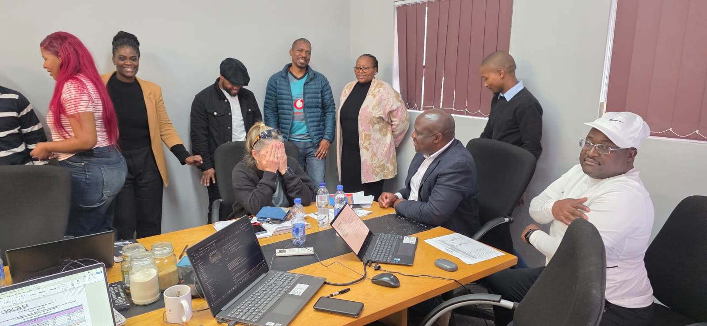
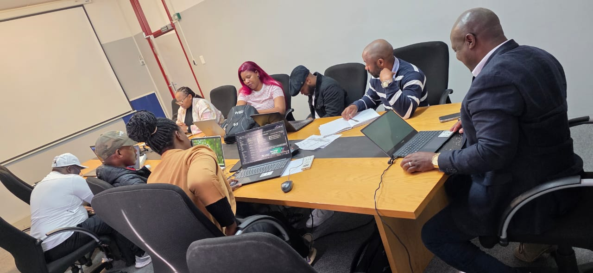

Ensuring institutional standards, compliance, and continuous improvement to maintain excellence and credibility across WSU.
The Quality Management Directorate (QMD) serves as the custodian of institutional quality at Walter Sisulu University, ensuring that all academic and support functions align with national standards, CHE requirements, and WSU's Vision 2030.
Core activities include coordination of internal and external quality reviews, facilitation of programme and qualification evaluations, monitoring of Quality Improvement Plans (QIPs), and the implementation of policies that support continuous quality enhancement.
QMD collaborates closely with Institutional Research & Planning, Academic Planning, and the Directorate of Learning and Teaching to provide evidence-based insights that support academic excellence, student success, and institutional effectiveness.
Read More About QMDBuilding institutional capacity and promoting a culture of quality across all university units through training and advocacy.
Explore →Monitoring quality indicators and driving continuous improvement through evidence-based practices and systematic reviews.
Explore →Ensuring compliance with CHE standards through internal reviews, self-evaluations, and Quality Improvement Plan oversight.
Explore →New Quality Management reports and dashboards are currently being finalised. Check back soon.

New QA Dashboard enables real-time tracking of review outcomes, QIPs, and institutional performance indicators.
Read More →Programme, module, and faculty reviews finalised with stronger alignment to CHE quality standards.
Read More →
Training workshop focused on PDCA implementation, self-evaluation, and enhancing institutional quality culture.
Read More →